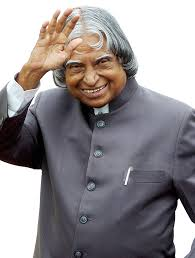

A.P.J.Abdul Kalam
1931-2015
Missile Man of India
Avul Pakir Jainulabdeen Abdul Kalam BR (15 October 1931 – 27 July 2015) was an Indian aerospace scientist and statesman who served as the 11th president of India from 2002 to 2007. He was born and raised in Rameswaram, Tamil Nadu and studied physics and aerospace engineering. He spent the next four decades as a scientist and science administrator, mainly at the Defence Research and Development Organisation (DRDO) and Indian Space Research Organisation (ISRO) and was intimately involved in India's civilian space programme and military missile development efforts.He thus came to be known as the Missile Man of India for his work on the development of ballistic missile and launch vehicle technology.He also played a pivotal organisational, technical, and political role in India's Pokhran-II nuclear tests in 1998, the first since the original nuclear test by India in 1974.
Kalam was elected as the 11th president of India in 2002 with the support of both the ruling Bharatiya Janata Party and the then-opposition Indian National Congress. Widely referred to as the "People's President",he returned to his civilian life of education, writing and public service after a single term. He was a recipient of several prestigious awards, including the Bharat Ratna, India's highest civilian honour.
Biographics
- Eternal Quest: Life and Times of Dr Kalam by S Chandra; Pentagon Publishers, 2002.
- President A P J Abdul Kalam by R K Pruthi; Anmol Publications, 2002.
- A P J Abdul Kalam: The Visionary of India by K Bhushan, G Katyal; A P H Pub Corp, 2002.
- A Little Dream (documentary film) by P. Dhanapal; Minveli Media Works Private Limited, 2008.
- The Kalam Effect: My Years with the President by P M Nair; HarperCollins, 2008.
- My Days With Mahatma Abdul Kalam by Fr A K George; Novel Corporation, 2009.
- A.P.J. Abdul Kalam: A Life by Arun Tiwari; Harper Collins, 2015.
- The People's President: Dr A P J Abdul Kalam by S M Khan; Bloomsbury Publishing, 2016